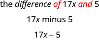
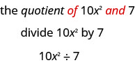

A10 · m82453 · continuation
Basa Jawa padinan · ngoko
One complete source section, not a completed module/book. Javanese instructional text supplies localized meanings of the English phrases; every problem links to its exact English wording. Indonesian is a distinct pinned comparison bridge, not native Javanese evidence.
Ngowahi Frasa Inggris dadi Wujud Aljabar
| Operasi | Frasa: tegesé nganggo basa Jawa | Wujud aljabar |
|---|---|---|
| Nambah | a ditambah b gunggung saka lan b ditambahi b b ditambahké menyang totalé lan b b ditambahake marang |
|
| Ngurangi | kurang b salisih saka lan b disuda b b dijupuk saka b dijupuk saka |
|
| Ping-pingan | ping b asil ping-pingan saka lan b ping pindho saka |
2a |
| Paran | dipara b asil paran saka lan b rasio saka lan b b dadi pambagi kanggo |

Katrangan gambar
Ana patang frasa Inggris: “the sum of a and b”, “the difference of a and b”, “the product of a and b”, lan “the quotient of a and b”. Rerangken “of a and” ing saben frasa ditulis abang, kalebu aksara a. Iki nuduhake gunggungé a lan b, salisihé a lan b, asil pingé a lan b, lan asilé a dipara b.
Tuladha saka sumber
Wangsulan saka sumber
Carané
- ⓐ Tembung sing dadi pituduh yaiku “difference”, tegesé salisih, tegese operasi ngurangi. Ing frasa Inggris, goleka tembung of lan and supaya ngerti wilangan wiwitan lan sing dijupuk saka kuwi.

Gambar sumber basa Inggris; katrangan ing ngisor iki nganggo basa Jawa. Katrangan gambar
Gambare ana telung larik: “the difference of 17x and 5”, kanthi “of” lan “and” ditulis abang; banjur “17x minus 5”; pungkasane 17x − 5. Tegesé 5 dijupuk saka 17x, ora dibalik.
- ⓑ Tembung “quotient” tegese asil paran, mula operasine mbagi.

Katrangan gambar
Gambar iki nuduhake frasa “the quotient of 10x squared and 7”, banjur pituduh mbagi 10x kuadrat nganggo 7, banjur 10x² ÷ 7. Tembung “of” lan “and” ing frasa ndhuwur ditulis abang. Sing dipara 10x kuadrat; pambaginé 7.
Tuladha saka sumber
Wangsulan saka sumber
Carané
- ⓐ Tembung sing dadi pituduh yaiku “more than”. Iki ngandhani supaya nambah. “More than” tegese “ditambahake marang”.
- ⓑ Tembung sing dadi pituduh yaiku “less than”. Iki ngandhani supaya ngurangi. “Less than” tegese “dijupuk saka”.
Tuladha saka sumber
Wangsulan saka sumber
Carané
- ⓐ Amarga frasa iki tegesé 5 ping kabèh gunggung, kurung kudu ngapit gunggung saka m lan n, Dadi gunggung mau diitung dhisik. Elinga urutan operasi.
- ⓑ Kanggo nggoleki gunggung, delengen “of” lan “and” ing frasa Inggris: kuwi nuduhake apa sing ditambah. Ing kéné, gunggung mau dumadi saka lima ping m lan n.
Tuladha saka sumber
Wangsulan saka sumber
Carané
| Tulisen frasa kanggo ambané pasagi dawa. | frasa Inggris “6 less than the length” |
| Nganggoa kanggo makili “dawane”. | frasa Inggris “6 less than” nganggo |
| Owahana “less than” dadi pituduh “dijupuk saka”; sing ana ing tengen dadi wilangan wiwitan. | 6 dijupuk saka |
| Owahana frasa mau dadi aljabar. |
Tuladha saka sumber
Wangsulan saka sumber
Carané
| Tulisen frasa kanggo cacah dime. | telu dijupuk saka papat ping cacah koin quarter |
| Nganggoa kanggo makili cacah quarter. | frasa Inggris “3 less than 4 times” nganggo q; teges operasiné 3 dijupuk saka 4 ping |
| Owahana frasa “4 ping ”. | 3 dijupuk saka |
| Owahana frasa mau dadi aljabar. |
Naskah wacan / Naskah narasi
Synthetic Javanese voice: jv-ID-SitiNeural; 877.512 seconds. This is not a human recording, and pronunciation has not been human-certified.